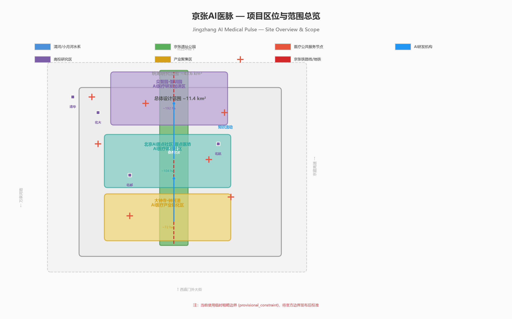
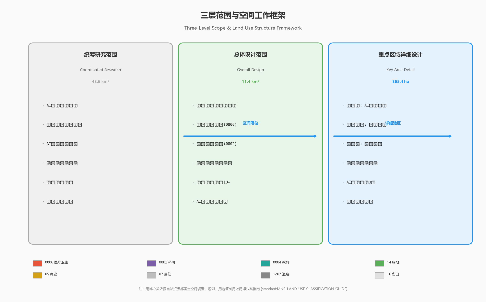
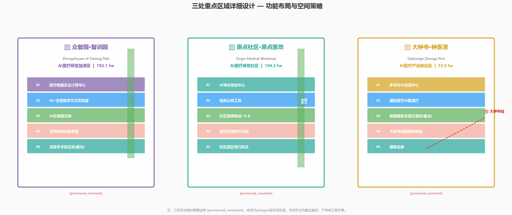
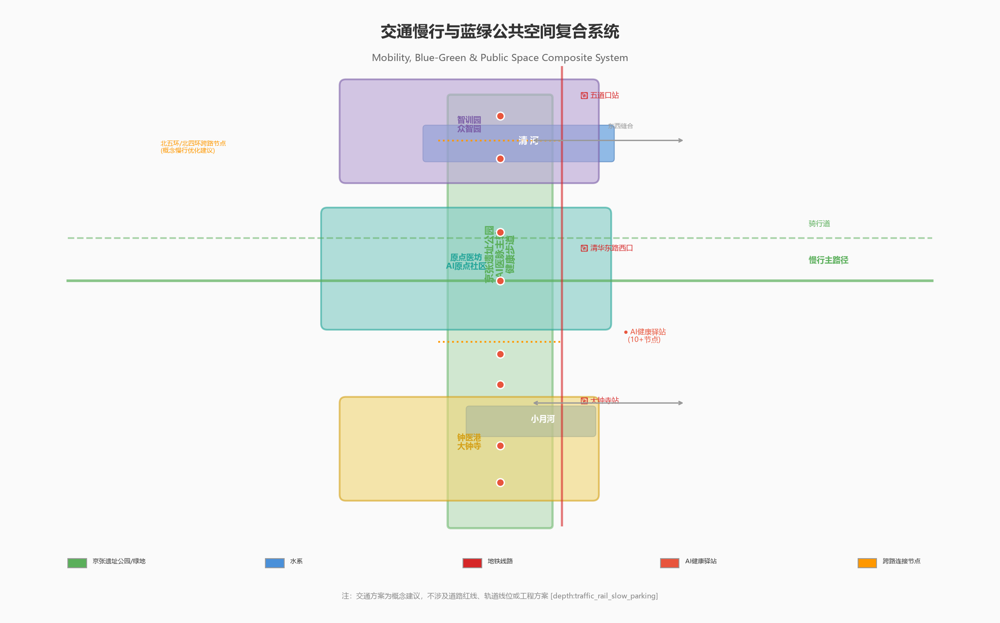
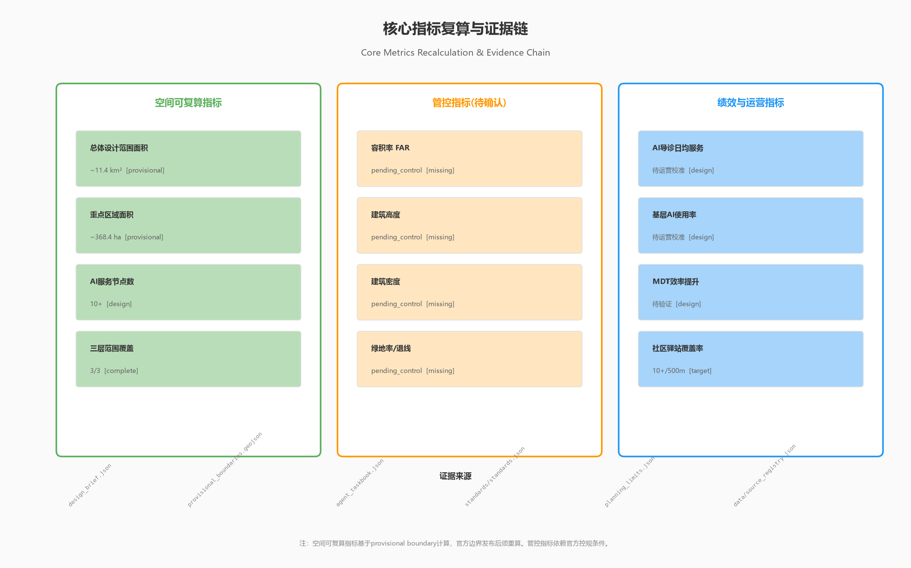

京张AI医脉——基于大模型的分布式医疗知识协同与公共服务创新走廊
以AI驱动的医疗知识协同为核心，在京张遗址公园沿线构建分布式医疗经验蒸馏、智能导诊与跨科室协同的公共服务创新走廊，将43.6平方公里片区打造为全球首个AI原生医疗公共服务示范区。
京张AI医脉——基于大模型的分布式医疗知识协同与公共服务创新走廊
设计依据与资料清单
本方案以北京市规划和自然资源委员会海淀分局发布的《百年京张AI创新带城市设计国际方案征集资格预审公告》为第一设计依据 来源，以 brief/site-package/ 中的设计简报、面向智能体任务书、临时边界、标准和来源登记为机器可读基础 来源。
方案的核心命题是：医疗体系长期依赖医生个体经验，导致优质诊疗能力难以规模化复制、基层首诊信任度不足、跨科室协同效率低下——这些问题可以通过AI医疗知识协同体系在空间上得到系统回应。 京张沿线集聚了中国最密集的AI研究力量（清华、北大、北航、中科院等）和丰富的医疗资源（北医三院、海淀医院等），具备构建"AI+医疗公共服务"示范廊道的独特条件。
方案遵循 data/source_registry.json 中登记的资料使用边界 来源：所有正式声明依据公开或已清权资料，医疗数据、病例、医生经验蒸馏等概念均表述为"需在合规框架下推进的研究方向"，不使用任何真实病例数据，不声称已获得医疗机构授权。
边界方面，当前采用 brief/site-package/geometry/provisional_boundaries.geojson 中的临时粗略边界。本方案的所有空间建议均为概念方案，待官方边界发布后需重新校核面积、节点位置和指标 空间数据。

三层范围工作框架
方案按照公告三层范围展开，每层对应不同的AI医疗任务深度 标准：
| 层级 | 面积 | AI医疗任务 | 空间策略 |
|---|---|---|---|
| 统筹研究范围 | 约43.6 km² | 构建覆盖全海淀的AI医疗知识协同网络，研究AI如何从底层重塑分级诊疗体系 | 识别医疗资源、AI研究机构、社区节点的空间分布，建立"研发-验证-应用-反馈"闭环 |
| 总体设计范围 | 约11.4 km² | 在京张遗址公园沿线部署医疗数据训练基础设施、AI导诊体验中心和跨科室协同示范节点 | 沿京张公园主轴，串联三大重点区，形成"AI医脉"公共空间序列 |
| 重点区域范围 | 约368.4 ha | 三处片区分别承担医疗AI研发加速、社区医疗体验、产业转化的差异化功能 | 众智园→研发训练、原点社区→体验验证、大钟寺→产业转化 |
三层之间的逻辑是：统筹层识别海淀全区医疗资源分布和AI能力供给 深度，总体设计层将"AI医脉"概念落位为沿京张公园的空间廊道 深度，重点区域层验证三处片区在医疗数据训练、社区导诊体验和产业转化方面的具体空间方案 深度。
空间证据由 空间数据 和 空间数据 承载。需注意当前边界为临时粗略多边形，节点位置和面积指标待官方边界发布后需重新校核。

统筹研究范围产业与未来城市研究
核心概念："京张AI医脉"
总体概念以"AI医脉"命名——"脉"字同时指向中医"脉络"（知识传承）和铁路"动脉"（京张线），隐喻AI打通医疗知识流动的血管，让顶级诊疗经验像铁路一样贯通，不再被个体医生的经验边界所阻隔 来源。
命名体系：
- 一带主名：京张AI医脉（Jingzhang AI Medical Pulse）
- 三区命名：智训园（众智园AI医疗研发加速区）、原点医坊（AI原点医疗体验社区）、钟医港（大钟寺AI医疗产业港）
- 视觉方向：以"脉"字篆书变体结合神经网络拓扑线条，蓝色（AI/科技）+ 绿色（健康/生命）双色系统
三大定位与AI医疗的关系：
- 百年京张文化带——詹天佑用铁路连接了中国，AI医脉用知识网络连接医生。京张铁路的历史叙事从"工业动脉"进化为"知识动脉"。
- 都市AI生活体验带——AI导诊、远程会诊、健康监测等服务嵌入日常生活场景，让公众可感知AI如何改善看病体验。
- AI融合创新带——医疗AI是多学科交叉最深的领域之一（NLP、CV、知识图谱、联邦学习、强化学习），是检验AI全栈能力的绝佳场景。
五大功能映射：
- AI全栈自主创新体系 → 医疗大模型训练平台、临床决策支持系统研发
- 世界级AI创新生态 → 全球医疗AI开源社区、联邦学习医疗数据联盟
- AI+场景赋能新范式 → AI导诊、跨科室MDT协同、基层全科医生AI辅助
- 智能化AI活力城市 → 社区健康驿站、AI体检小屋、慢病管理智能体
- AI治理全球话语权 → 医疗AI伦理标准、数据隐私保护框架、AI辅助诊疗规范
全球AI医疗创新生态案例研究
方案研究以下5-8个全球案例，提炼可转化为空间、运营和场景机制的经验 深度：
1. Mayo Clinic + Google Health（美国）——将临床数据与AI模型结合，建立跨院区诊断知识共享体系。启示：京张沿线可借鉴其"临床-研究-教育"三位一体的空间组织模式。 2. NHS AI Lab（英国）——国家级医疗AI伦理框架和沙盒测试环境。启示：众智园可设立类似"医疗AI沙盒"，为医疗AI产品提供合规测试空间。 3. Singapore's National AI Strategy in Healthcare——将AI慢性病管理嵌入社区诊所。启示：原点社区可参考其社区级AI健康服务站的布点密度和功能配置。 4. Babylon Health（英国/卢旺达）——AI症状分诊与全科医生远程问诊。启示：AI导诊+SaaS化远程诊疗的公共空间表达方式。 5. 深圳AI病理平台——多家医院共享病理切片数据库进行联合训练。启示：联邦学习框架下的跨机构数据协同需要物理空间承载安全计算节点。 6. 日本AI诊疗支援系统（医院+介护）——将AI辅助覆盖从急症延伸到康养和护理。启示：AI医疗的"诊前-诊中-诊后-康养"全链条空间规划。 7. 印度AI基层医疗（Wadhwani AI）——用AI辅助社区卫生工作者进行结核病等传染病筛查。启示：AI降低基层医疗门槛的核心价值，可用于北京社区场景。 8. Stanford AIMI Center——跨学科AI+医学影像研究中心的空间组织。启示：跨学科AI医疗研究中心应在空间上打破院系壁垒。
这些案例的空间启示归结为三个原则：（1）AI医疗研发需要紧邻临床空间以形成反馈闭环；（2）AI医疗体验需要嵌入日常社区而非封闭在医院内部；（3）跨机构数据协同需要专门的安全计算物理节点。这些原则指导了后续三区的空间分配。
总体设计范围城市更新与控规深度城市设计
空间结构："一脉三核多节点"
总体设计范围约11.4 km²，沿京张遗址公园主轴布局AI医疗公共服务体系。空间结构为"一脉三核多节点" 深度：
- 一脉：京张遗址公园AI医脉主轴。沿公园步道布置医疗知识展示节点、AI健康互动装置、社区健康驿站。这不仅是物理廊道，更是知识流动的象征——每一位步行者都能感知到医疗知识的传递。
- 三核：对应三处重点片区，分别承担研发训练、体验验证、产业转化功能。
- 多节点：在轨道站点、社区中心、高校入口等位置，部署10个以上AI健康微站点（AI Triage Kiosk），形成网格化分布。
空间证据以 空间数据 和 空间数据 承载。土地利用分区将医疗卫生用地（0806）、科研用地（0802）、教育用地（0804）与公共空间（京张公园）进行系统关联，形成"研究-临床-社区"的联动格局 标准。
AI医疗空间策略的四个创新维度
维度一：医疗记录的深度训练基础设施
在众智园规划"医疗数据湖"概念节点——这不是一个建筑，而是一套包含安全计算中心、脱敏数据仓库、联邦学习节点的分布式基础设施集群。概念上，它解决的是当前医疗AI的核心瓶颈：高质量标注医疗数据的稀缺性和跨机构数据共享的制度障碍。
空间需求包括：高安全等级机房（Tier III+）、多机构数据接入网关、隐私计算沙箱、标注协作空间。这些不是工程方案，而是概念性的空间需求清单，供后续专业团队深化 深度。
维度二：医生经验蒸馏的认知工坊
在原点社区布局"临床认知工坊"——一个将资深医生的临床决策过程转化为结构化知识图谱的工作空间。概念上，它不替代医生，而是让顶尖医生的"隐性知识"（tacit knowledge）通过AI系统化地转化为可传承的"显性知识"。工坊需要：临床观察室（供AI系统记录多学科会诊过程）、知识建模空间、决策复盘室。
维度三：AI全流程导诊的体验中心
沿京张公园布置"AI导诊体验长廊"——公众可以体验从症状输入、AI分诊、科室匹配到就医路径规划的全流程。这不是传统的挂号窗口，而是一个可交互、可学习、可反馈的公共服务界面。场景设计需遵循不给出医疗建议、仅做公共服务导航的边界约束 来源。
维度四：跨科室AI协同的会诊枢纽
在大钟寺布局"多学科AI协同中心"——利用AI调度系统，实现跨科室病例的智能分发、专家匹配、会诊排期和信息同步。这打破了传统MDT"人工协调、效率低下"的瓶颈。
重点区域详细设计
众智园——AI医疗研发加速区（智训园）
定位：花园型医疗AI研发与训练基地。利用众智园临近清华、五环路交通优势，布局医疗大模型训练、联邦学习安全计算、医疗知识图谱构建等基础设施 空间数据。
空间动作：
- 设立"医疗数据安全计算中心"概念节点——承载多中心联合训练的隐私计算基础设施
- 沿清河界面布局"AI+生物医学交叉实验室"带状空间
- 在绿地空间中嵌入"医疗AI伦理展示廊"——将AI伦理原则可视化、可体验
- 预留远程手术机器人验证场地（概念规划，不做工程结论）
AI场景：医疗大模型训练、联邦学习跨机构协同、医疗知识图谱构建、AI病理/影像研发、临床决策支持系统测试。这里的研发产出通过"一脉"向原点社区的体验中心和大钟寺的产业转化区输送 深度。
北京AI原点社区——AI医疗体验社区（原点医坊）
定位：近校型AI医疗体验与社区健康创新街区。利用原点社区紧邻清华、北大、北医三院的人才优势和人口密度，打造全国首个AI原生医疗公共服务体验示范区 空间数据。
空间动作：
- "AI导诊体验中心"——公众可体验全流程AI导诊系统，从症状描述到科室导航
- "临床认知工坊"——医生经验蒸馏的工作空间，位于高校-医院交界处
- "社区健康驿站"5-8处——嵌入现有社区空间的小型AI健康服务站点
- "医疗开源协作空间"——面向医疗AI开发者的共享办公与展示空间
- 校区-园区慢行缝合中嵌入"健康步道"——沿步道布置健康数据科普展示
用户画像与场景：
- 高校AI研究者：需要紧邻临床的验证环境
- 社区居民：首次体验AI医疗公共服务
- 基层医生：使用AI辅助系统提升诊疗能力
- 国际访客：考察AI医疗的中国方案
这里是对应 agent.3（AI+场景）和 agent.4（朝圣地标）的核心空间，将在后续章节详细展开。
大钟寺——AI医疗产业转化区（钟医港）
定位：城市型AI医疗产业与国际合作枢纽。利用大钟寺轨道站交通便利性和既有商业氛围，承载医疗AI企业的成果转化、国际路演和产业服务 空间数据。
空间动作：
- "多学科AI协同中心"——跨科室MDT的AI调度示范平台
- "国际医疗AI路演厅"——面向全球的医疗AI产品展示与投资对接空间
- "医疗数据要素合规交易所"概念节点——在合规框架下探索脱敏医疗数据的授权流通机制
- 大钟寺站四象限步行连通改造中融入"健康走廊"——将日常通勤转化为健康知识获取场景
| 重点片区 | 医疗定位 | 核心空间动作 | AI医疗功能 | 证据引用 |
|---|---|---|---|---|
| 众智园（智训园） | AI医疗研发加速 | 医疗数据安全计算中心、AI+生物医学交叉实验室 | 医疗大模型训练、联邦学习、知识图谱 | 空间数据 |
| 原点社区（原点医坊） | AI医疗体验社区 | AI导诊体验中心、临床认知工坊、社区健康驿站 | 经验蒸馏、导诊体验、基层AI辅助 | 空间数据 |
| 大钟寺（钟医港） | AI医疗产业转化 | 多学科AI协同中心、国际路演厅、数据要素交易所 | 跨科室协同、产业转化、国际合作 | 空间数据 |

AI 创新生态、人才画像与 AI+ 场景
核心命题：如何用AI打通医疗知识壁垒
当前中国医疗体系的核心痛点，不是缺设备、不是缺医院，而是优质诊疗能力被困在个别专家的经验中无法规模化扩散。一个三甲医院主任30年积累的诊断直觉，在他退休之后几乎无法传承。一个基层全科医生面对复杂病例时，无法实时获取专科经验。不同科室的医生对同一患者的认知碎片化，缺乏系统性协同。
AI有机会系统性地解决这个问题，而京张沿线是验证这一方案的最佳空间载体。具体路径包括：
五类用户画像
| 用户画像 | 核心需求 | AI解决方案 | 空间承载 | 自检边界 |
|---|---|---|---|---|
| 基层全科医生 | 面对复杂病例时缺乏专科决策支持 | AI辅助诊断系统，基于海量脱敏病例训练的分诊建议和用药提示 | 原点社区健康驿站、线上平台 | AI仅提供参考建议，最终决策权归医生，不替代临床判断 |
| 三甲专科医生 | 大量时间消耗在重复性工作中，跨科室MDT效率低 | AI病历摘要生成、跨科室会诊智能调度、文献自动检索 | 大钟寺多学科AI协同中心 | 不采集未经授权的个人诊疗数据 |
| AI研究团队（高校/企业） | 缺乏合法的医疗数据训练环境和临床验证闭环 | 联邦学习安全计算平台、临床认知工坊观察协作 | 众智园医疗数据安全计算中心 | 所有数据需经伦理委员会审批，遵循数据最小化原则 |
| 社区居民/患者 | 看病不知道挂哪个科、候诊时间过长、对基层医疗不信任 | AI导诊系统（症状→科室匹配→就医路径规划）、社区AI健康驿站的基础健康咨询 | 社区健康驿站、京张公园AI导诊体验长廊 | 不提供医疗诊断结论，仅做公共服务导航；设置明确的人工复核节点 |
| 医疗管理者 | 医疗资源配置缺乏数据支撑，难以评估诊疗质量 | AI驱动的区域医疗资源调度、诊疗质量智能审核、流行病早期预警 | 三区联动的数据驾驶舱（概念） | 所有统计数据需脱敏聚合，不追踪个体 |
10张AI场景卡
场景卡01：AI全流程导诊——"从进医院门到见到对的人"
空间载体：原点社区AI导诊体验中心 + 京张公园AI导诊体验长廊 + 10个社区健康驿站
场景描述：用户通过自然语言描述症状（可选文字、语音），AI系统进行语义理解，结合知识图谱推理，给出建议科室、紧急程度评估和就医路径导航。系统连接区域医疗机构信息，可推荐就近或最佳匹配科室。全程设置3次人工复核节点：症状理解复核、分诊结果复核、就医建议复核。
数据来源：公开医学知识库、临床诊疗指南（需清权）、公共服务机构信息。不使用真实病例数据做训练。
隐私边界：不存储个人身份信息与症状的关联记录。查询日志脱敏后可用于服务质量改进，但需用户知情同意。
运营机制：初期由三甲医院门诊部督导运营，中期向社区健康驿站推广，长期纳入北京市分级诊疗体系。写为"概念建议，供专业团队与卫生主管部门深化研究" 来源。
场景卡02：医生经验蒸馏——"让30年的临床直觉可以被学习"
空间载体：原点社区临床认知工坊
场景描述：在获得医生和患者双重知情同意的前提下，AI系统通过多模态记录（会诊录音转录、电子病历结构化、诊断决策路径追踪）捕捉资深医生的临床推理过程。系统将"症状→鉴别诊断→确诊→治疗方案"的决策链转化为结构化知识图谱，供AI模型学习和基层医生参考。
测试验证场景（对应 agent.3 要求）：选取3-5种常见病种（如高血压、糖尿病、COPD）进行经验蒸馏的概念验证，对比蒸馏前后AI辅助系统对基层医生的决策质量提升效果。
数据来源：需医生和医院授权，需经伦理委员会审批。当前表述为"技术概念和研究方向，不声称已获得任何机构和个人的数据授权"。
场景卡03：跨科室AI协同——"MDT从周会变成实时响应"
空间载体：大钟寺多学科AI协同中心
场景描述：当一位患者同时涉及心血管、内分泌、肾内科等多个科室时，传统模式是逐一挂号、多次就诊，科室之间缺乏信息同步。AI协同中心的概念是：由AI系统自动识别病例中的多学科特征，匹配相关科室专家，智能调度会诊时间，同步各科室的诊疗意见，生成整合诊疗方案。
测试验证场景：选取复杂共病病例（心-肾-代谢综合征）进行AI协同调度的模拟验证，评估效率提升和诊疗一致性改善。
运营边界：AI只做信息抽取、匹配和调度，所有诊疗决策由参与会诊的医生作出。写为"技术概念验证，不声称可替代现行会诊制度"。
场景卡04：社区AI健康驿站——"500米内的AI健康第一站"
空间载体：总体设计范围内10个以上社区节点 空间数据
场景描述：在现有社区服务中心、药房、便利店旁边嵌入小型AI健康服务空间（约15-30m²），提供：AI基础健康咨询（非诊断）、慢性病管理提醒、体检报告解读、用药依从性提醒、心理健康筛查。外观设计为亲切、开放的"健康小站"，而非冰冷的医疗设备。
场景卡05：联邦学习医疗数据联盟——"数据不出院，模型共同训"
空间载体：众智园医疗数据安全计算中心
场景描述：多家医院在不共享原始病历的前提下，通过联邦学习框架共同训练AI诊断模型。每家医院的数据保留在本地，仅交换加密梯度。这解决了医疗数据"不敢共享、不能共享"的核心瓶颈。空间上需要一个专门的安全计算中心作为联邦学习的协调节点。
场景卡06：AI慢病管理智能体——"AI陪伴式的长期健康管理"
空间载体：原点社区健康驿站 + 线上平台
场景描述：面向高血压、糖尿病等慢病患者，AI智能体提供用药提醒、饮食建议、运动指导、定期复查提醒。不是替代医生，而是补充医生诊室之外无法覆盖的日常管理。配合社区健康驿站的线下测量设备（血压、血糖、体脂等），形成线上线下闭环。
场景卡07：AI基层诊疗质量审核——"让每一位患者的诊疗都有第二双眼睛"
空间载体：众智园AI伦理与质量监督中心（概念）
场景描述：AI系统对基层医疗机构的处方、诊断、检查建议进行自动化质量审核，识别潜在的不合理用药、漏诊风险和诊疗规范偏离。不是惩罚性审核，而是教育性反馈——帮助基层医生在实践中持续提升。质量报告脱敏后用于区域医疗质量管理。
场景卡08：AI心理健康筛查——"在公共空间中无声的关怀"
空间载体：京张遗址公园公共空间节点 + 高校心理中心
场景描述：利用AI语音情感识别和文字心理分析技术，在取得知情同意的前提下，为高校学生和社区居民提供心理健康自评和资源导航。不与任何监控系统联动，所有数据本地处理，结果仅用户本人可见。
场景卡09：AI急救调度优化——"黄金时间内最快的响应"
空间载体：大钟寺多学科AI协同中心（调度中枢）
场景描述：AI系统整合交通、急救车GPS、医院急诊容量等实时数据，在急救事件发生时智能匹配最近的可用急救资源、最适合的接诊医院，并提前向急诊科发送AI生成的院前摘要报告。测试验证场景：在北京典型交通条件下进行急救调度的模拟对比验证。
场景卡10：全球AI医疗开源协作社区——"让北京的医疗AI方案服务全球"
空间载体：原点社区医疗开源协作空间 + 线上平台
场景描述：围绕"京张AI医脉"建立全球医疗AI开源社区，向全球开发者和研究者开放：脱敏的公开医疗知识图谱、AI导诊基准测试集、联邦学习框架参考实现。每年举办"京张AI医疗开源马拉松"，吸引全球开发者参与。写为"概念建议和社区运营方向"。
用地、建筑规模与拆改留方案
用地布局策略
基于国土空间调查、规划、用途管制分类 标准，方案建议在三处重点区域内调整和优化医疗卫生用地（0806）、科研用地（0802）、教育用地（0804）和商业服务业用地（05）的配比：
- 众智园范围内，建议增加科研用地与医疗卫生用地的混合比例，容纳医疗AI研发设施
- 原点社区范围内，建议在现有社区空间中嵌入医疗卫生服务功能，不涉及大规模拆改
- 大钟寺范围内，建议商业服务业用地中引入医疗AI产业转化和展示功能
重要声明：所有用地调整建议均为概念方案，需依据官方控规条件和现状权属资料进行专业复核。在缺少官方控规、现状建筑和权属数据的条件下，不得将上述建议理解为法定规划调整或拆改留决定 深度。用地分区以 空间数据 表达，建筑基底以 空间数据 表达。建筑面积、开发强度、建筑高度、建筑密度等具体指标依赖官方控规条件 指标，当前标记为 pending_control。
拆改留原则
方案建议遵循"最小干预、功能注入"原则：
- 保留：京张遗址公园主体、既有高校和医疗机构建筑、历史文化保护建筑
- 改造：沿线低效商业空间、闲置厂房可改造为AI医疗研发或体验空间
- 新建：仅建议在三处重点区的特定节点新增标志性AI医疗公共服务建筑
- 禁止声明：不给出任何具体地块的拆改留方案，不声称拆除任何现有建筑
交通、轨道、市政与公共服务设施
交通与慢行系统
AI医脉主轴依托京张遗址公园的线性公共空间，天然具备慢行优势 深度 空间数据：
- 慢行优先：沿京张公园主轴设置"健康步道"标识系统，串联各AI医疗节点
- 轨道站点接驳：五道口站→原点医坊、大钟寺站→钟医港，优化站点周边慢行引导标识
- 跨路节点：北五环、北四环等跨环路节点建议增加慢行友好过街设施（概念建议，不做工程方案）
- 公交微循环：建议在三大片区之间开通"AI医脉"主题公交线路（概念运营建议）
AI医疗公共服务设施布局
| 设施类型 | 建议位置 | 建议规模 | 服务半径 | 配套条件 |
|---|---|---|---|---|
| 医疗数据安全计算中心 | 众智园 | 约3000-5000m²（概念） | 服务海淀全区 | 高安全等级机房、独立能源 |
| AI导诊体验中心 | 原点社区 | 约800-1200m²（概念） | 辐射总体设计范围 | 轨道站点步行可达 |
| 多学科AI协同中心 | 大钟寺 | 约1500-2000m²（概念） | 服务三区 | 大钟寺站步行衔接 |
| 社区AI健康驿站 | 沿线10+节点 | 每处15-30m²（概念） | 500m | 利用既有社区服务空间 |
| 临床认知工坊 | 原点社区 | 约500-800m²（概念） | 紧邻高校和医院 | 隐私保护和录音录像设施 |
以上所有规模仅为概念估算，不做工程可行性结论 深度。

蓝绿空间、公共空间与城市风貌
AI医脉公共空间系统
京张遗址公园是方案最核心的公共空间载体 空间数据 空间数据。方案提出"公园即展场、步道即课堂"的公共空间策略：
- 医疗知识展示带：沿公园步行主轴，设置AI医疗知识科普装置、历史医疗技术演进展示
- 健康互动节点：在公园的5-8个节点处嵌入AI健康互动设施（基础体征自测、健康知识问答）
- 南北贯通：从众智园到原点社区到大钟寺，形成完整的"AI医脉"步行体验线
蓝绿空间比例的设计意义在于：AI医疗研发、体验和产业活动需要高质量公共空间作为"创新交往界面"指标 指标。医疗AI的跨学科合作往往发生在非正式交往中，公园、绿地和公共空间是这种交往的最佳载体 深度。
三个AI朝圣地标/荣誉展示节点
响应 agent.4 要求，提出三个概念性AI朝圣地标 来源：
1. "医脉之塔"（众智园）——以DNA双螺旋和神经网络拓扑为设计语言的标志性展示塔，象征AI与生命科学的交汇。塔身周边设置"全球医疗AI里程碑荣誉墙"，铭刻医疗AI领域的重大突破和贡献者。概念建议，供专业团队深化设计。
2. "知识之泉"（原点社区）——位于AI导诊体验中心前广场的互动水景装置，水流形态根据实时AI医疗知识图谱的动态变化而改变，象征医疗知识从个体经验到集体智慧的流动。地面嵌入"京张AI医脉"的命名和标识系统。概念建议。
3. "协同之桥"（大钟寺）——连接大钟寺站和AI产业聚集区的人行天桥（概念），桥身内设跨科室协同案例的数字展示廊，桥下公共空间设"医疗贡献者荣誉墙"和"开源社区贡献榜"。概念建议，不做工程方案，具体形态和工程可行性需专业团队深化。
三个地标的精神内核：不崇拜AI技术本身，而致敬通过AI解放和增强人类医疗能力的贡献者。地标不是纪念碑，是"仍在生长的荣誉系统"。
城市风貌与文化叙事
京张铁路的历史与AI医脉的叙事交织 深度：
- 詹天佑的"人字形"铁路智慧 → AI医疗知识网络的多路径协同
- 铁路连接了城市 → AI连接了医生的集体智慧
- 工业时代的机械之美 → 信息时代的知识之美
导视标识系统以"脉"字为母题，融入铁路轨道和神经网络的双重意象。风络控制需遵循 标准，区分设计建议和法定控制 来源。
更新项目清单、实施政策与分期计划
近期试点项目（1-2年概念）
| 项目编号 | 项目名称 | 类型 | 空间位置 | 依赖条件 | 证据引用 |
|---|---|---|---|---|---|
| JZ-AIM-01 | AI导诊体验中心 | 公共服务/展示 | 原点社区 | 既有空间改造许可、医疗机构协作 | 空间数据 |
| JZ-AIM-02 | 首批5个社区AI健康驿站 | 公共服务 | 总体设计范围 | 社区合作、卫生主管部门协调 | 空间数据 |
| JZ-AIM-03 | 京张公园AI医脉导视系统 | 公共空间/品牌 | 京张遗址公园 | 公园管理单位许可 | 空间数据 |
| JZ-AIM-04 | 医疗数据安全计算中心（一期） | 基础设施 | 众智园 | 网络安全等级保护、伦理审批 | 空间数据 |
中期推进项目（3-5年概念）
- 临床认知工坊（原点社区）
- 联邦学习医疗数据联盟正式运营
- AI慢病管理智能体社区推广
- 多学科AI协同中心（大钟寺）
- 三区慢行健康步道全线贯通
长期愿景（5年以上概念）
- 全球AI医疗开源协作社区年度活动常态化
- AI基层诊疗质量审核系统全域覆盖
- "医脉之塔"等三个朝圣地标建设（概念阶段）
- 京张AI医脉品牌国际化输出
所有项目均为概念建议和参考方案，不声称任何政府承诺、资金安排或确定实施计划 来源 深度 空间数据。
全球AI创新活动与长期运营
响应 agent.6 要求，提出运营框架：
年度活动体系：
- 京张AI医疗峰会（春季·原点社区）——全球医疗AI学术与产业交流
- AI医疗开源马拉松（夏季·众智园）——开发者围绕医疗AI数据集的编程竞赛
- 公众AI健康体验周（秋季·全线公共空间）——面向市民的健康AI科普活动
- 医疗AI伦理与治理国际论坛（冬季·大钟寺）——政策制定者与研究者对话
开发者社区运营：
- 建立"京张AI医脉"GitHub组织，开源医疗AI工具集和基准数据集
- 设立"医脉学者"驻留项目，吸引全球医疗AI研究者在京张沿线短期工作
- 医脉贡献积分系统：代码贡献、数据标注、临床验证→荣誉墙展示
国际传播机制：
- 对标"硅谷医疗AI"建立"京张医疗AI"国际品牌
- 每年发布《京张AI医疗公共服务白皮书》
- 参与WHO、ITU等国际组织的AI医疗标准制定
所有运营机制写为"概念建设和深化方向"，不声称已确定的政府安排。
指标体系、面积复算与合规矩阵
核心指标体系
方案建立三类指标 深度 指标：
第一类：空间可复算指标（可从GeoJSON直接计算）
- 总体设计范围面积：约11.4 km²（provisional，待官方边界校准）
- 重点区域面积：约368.4 ha（provisional）
- 绿地与公共空间比例、建筑基底面积等：参见
metrics.json
第二类：管控指标（待官方控规条件确认）
- 容积率、建筑高度、建筑密度、绿地率、建筑退线——当前标记为 pending_control
第三类：绩效指标（需持续运营数据校准）
- AI导诊日均服务人次、基层医生AI辅助使用率、跨科室MDT效率提升
- 社区AI健康驿站覆盖率、AI医疗开源社区活跃贡献者数
- 慢病管理智能体用户留存率、京张AI医疗峰会参与人数
完整指标数值、公式、来源和置信度保存在 metrics.json。正文仅解释指标的设计含义 深度。
合规矩阵覆盖
compliance_matrix.json 逐条覆盖公告1.3、1.4、1.5和agent.1-agent.6的所有必选任务。standard_matrix.json 覆盖所有强制性专业标准。design_depth_matrix.json 标记所有正式设计深度项的完成状态 深度。

风险、版权与合规说明
关键风险
1. 数据合规风险：方案核心依赖脱敏医疗数据和医生经验的AI化处理。所有数据采集、标注、训练和部署必须在获得伦理审批和知情同意后进行。缺少明确的医疗数据AI使用法规环境可能导致方案推进受阻。 2. 临时边界风险：当前使用provisional boundary生成的空间布局和面积指标，在官方边界发布后可能需要大幅调整。 3. AI临床有效性风险：AI导诊和辅助诊断系统需要大量的临床验证才能证明其安全性和有效性——这不是城市设计能解决的问题，需要标注为专业医疗AI研发的后续步骤。 4. 控规条件缺失风险：缺少容积率、建筑高度、退线等官方控规条件，空间规模建议仅为概念性估算 深度。
合规声明
- 本方案不声称官方批准、审定控规、最终土地权属、最终建设规模或保证实施
- 方案中所有涉及医疗机构名称、医生、病例的内容均为概念性示例，与任何真实的机构和个人无关
- 所有AI医疗场景均标注"概念建议/参考方案/可供专业团队深化研究"
- 所有商标、字体、图像、人物、企业标识使用需另行清权
- 双语文稿由AI辅助翻译，专业校对需人工完成
版权声明
详见 report/copyright_statement.md。方案内容和空间数据遵循 COMMUNITY-DISPLAY-ONLY 许可。AI agent对事实、来源、版权、空间数据、指标和表达负责 标准。
参考资料
- 北京市规划和自然资源委员会海淀分局. 百年京张AI创新带城市设计国际方案征集资格预审公告. 2026-05-09. 标准
- 面向全球智能体开展百年京张AI创新带城市设计开源征集任务书摘录. 2026-05-18. 来源
- 北京市科学技术委员会. "三区两翼"打造世界级AI集聚地. 2026-04-03.
- 中华人民共和国住房和城乡建设部. 城市设计管理办法. 2017.
- 中华人民共和国住房和城乡建设部. 城市、镇控制性详细规划编制审批办法.
- 中华人民共和国自然资源部. 国土空间调查、规划、用途管制用地用海分类指南. 2023.
- 海淀区人民政府. 海淀区发布"1+X+1"现代化产业体系建设布局. 2026-03-02.
- Mayo Clinic Platform. Accelerating AI in Healthcare. 2024.
- NHS England. Artificial Intelligence Lab. 2024.
- Singapore Ministry of Health. National AI Strategy in Healthcare. 2023.
- 完整机器索引：见
sources.json、metrics.json、compliance_matrix.json、standard_matrix.json、design_depth_matrix.json